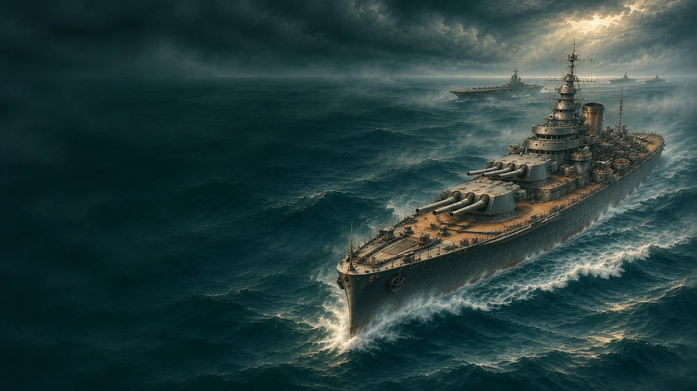

序章航海演习
第三盏航灯
第三盏航灯熄灭，白鹭号没有回报。随沈岚驶入外海，在暗礁和浅滩之间学会布阵、打照明弹，再向雾中出现的敌舰开火。


第一章水雷与封锁
潮门留灯
潮门外口突然熄灯，白鹭号被水雷挡在港内。派扫雷舰清出主航道，再用布雷舰守住礁背的缺口，掩护船队离港。


第二章航空与防空
云上航线
刚驶离潮门，船队就被空袭冲散。让防空舰的保护范围接在一起，护住掉队的货船。等航母赶到，派战斗机夺回制空权。


第三章潜艇与反潜
深处有回声
白鹭号恢复通话，却在船底听见异响。出动反潜机投下浮标，用声呐逼潜艇上浮，再决定用深弹覆盖海域，还是让声导鱼雷追上目标。
第四章装甲与大炮
铁雨之后
岬角舰队封住外湾，普通炮火难以打穿重装甲。给炮击舰换上穿甲弹，再找准时机，用重炮齐射或重型航弹撕开封锁。

第五章补给与维修
灯火接力
伤舰赶不回船坞，岸台还在等货。把维修舰与补给舰调进编队，用有限的行动力救回受损舰艇，把船队带回三号航灯下。


实机混剪
先照亮，再齐射。
出航
六十关单人战役、可自选舰队和牌组的自由演习，以及局域网双人对战。
下载 Windows 版
Windows x64 v1.0.0 简体中文